← All projects
Open Source
Quaero
quaerō · Latin · to seek · to ask · to inquire
A question-driven analytics pipeline that automates data profiling, cleaning, semantic inference, and mart generation — from raw datasets to BI-ready Parquet outputs.
Python 3.11+PandasParquet
Power BITableauLooker Studio
CLIMIT License
The Problem
Data analysts spend most of their time preparing data. Not analyzing it.
Messy exports, inconsistent schemas, missing documentation, manual cleaning — the same deterministic steps repeated across every project. By the time actual analysis begins, half the working session is already gone.
Quaero automates the deterministic part. The creative part — metric selection, business framing, interpretation — stays human.
The Approach
Start with the question, not the schema.
You provide a raw dataset (CSV, Parquet, or URL) and a business question in plain language. Quaero uses that question to guide every downstream decision — which fields become metrics, which become dimensions, how the mart is structured, what the README says.
Raw dataset + business question = semantic metrics + analytical marts. Manual data wrangling drops out of the picture entirely.
Architecture
An 8-step automated refinery
01Dataset Profiling
Schema detection, null rates, cardinality analysis.
02Data Cleaning
Type normalization, deduplication, standardization.
03Semantic Inference
Metric and dimension detection guided by the business question.
04Mart Generation
Structured analytical tables ready for BI tools.
05Metadata Creation
Field-level descriptions and coverage information.
06Anomaly Detection
Flags outliers before they reach the dashboard.
07Dashboard Suggestions
Recommended visualizations based on mart structure.
08BI-Ready Output
Parquet files compatible with Power BI, Tableau, Looker Studio.
Semantic Engine
Deterministic inference — no configuration needed.
The engine parses the business question and maps it to three components. Example: "What is the average trip distance by location?"
| Component | How it's inferred | Example |
|---|
| Aggregation Intent | Keywords: average, total, highest, count… | average |
| Metric Column | Deterministically from numeric fields | trip_distance |
| Dimension Column | From categorical / ID fields | location |
Works ~80% of the time without configuration. For the remaining 20%, manual overrides --metric-column and --dimension-column are available.
Naming Convention
Every output field is self-descriptive.
| Type | Format | Example |
|---|
| Physical Metrics | <aggregation>_<source_column> | avg_trip_distance |
| Row Counts | record_count | record_count |
| Total Values | total_<source_column> | total_fare_amount |
Project Structure
Every project is isolated and portable.
├── raw/
├── staging/
├── marts/
├── metadata/
└── final_summary_report.json
Execution Modes
CLI for exploration. Config-driven for production.
CLI Mode
- Command-line flags
- Single datasets
- Quick, one-off inference
- Rapid prototyping
Config-Driven Mode
project_config.json- Multi-dataset projects
- Question guides all metadata
- Production-grade pipelines
Getting Started
Three commands to get running.
python -m venv venv
source venv/bin/activate
pip install -r requirements.txt
python -m quaero --dataset data/myfile.csv --question
Architecture Deck — 13 slides
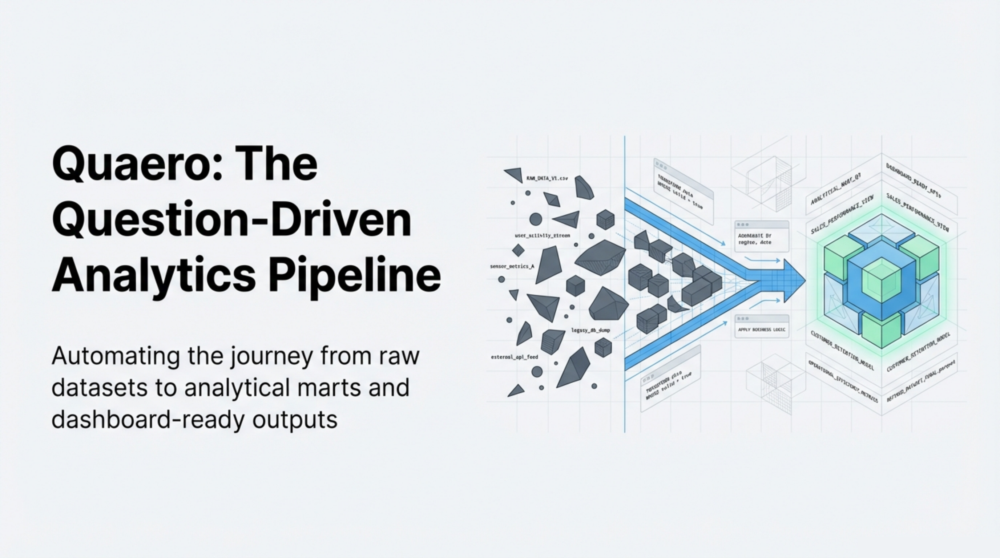
Overview: The Question-Driven Analytics Pipeline01 / 13
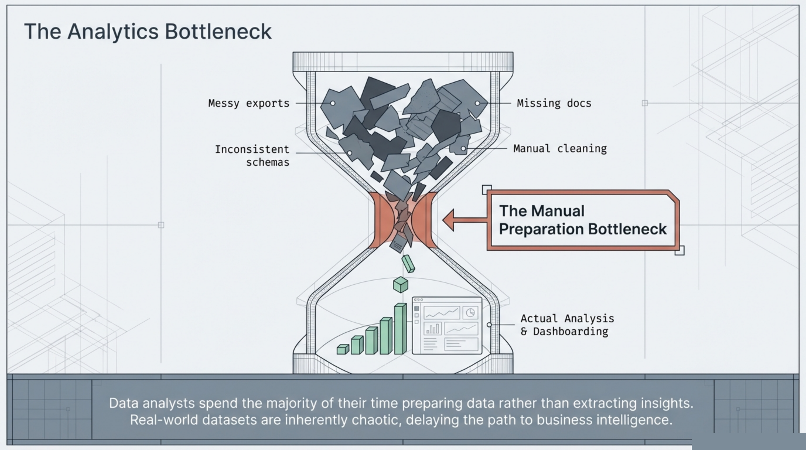
The Analytics Bottleneck02 / 13
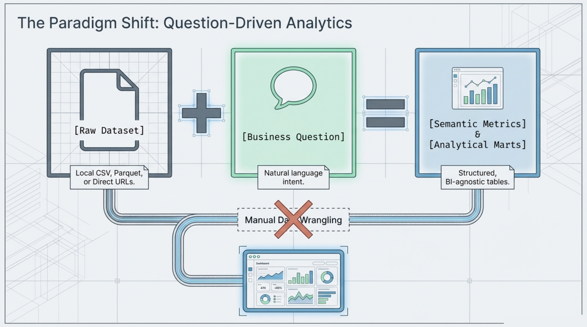
The Paradigm Shift: Question-Driven Analytics03 / 13
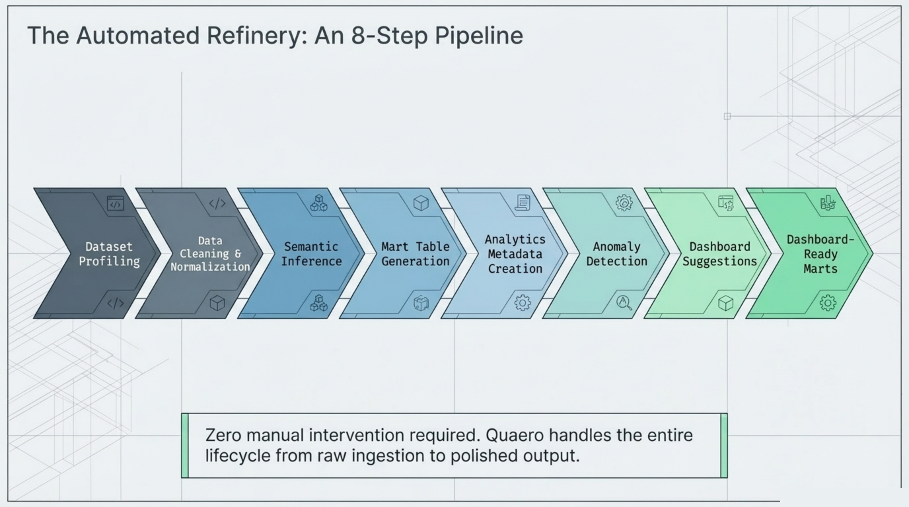
The Automated Refinery: 8-Step Pipeline04 / 13
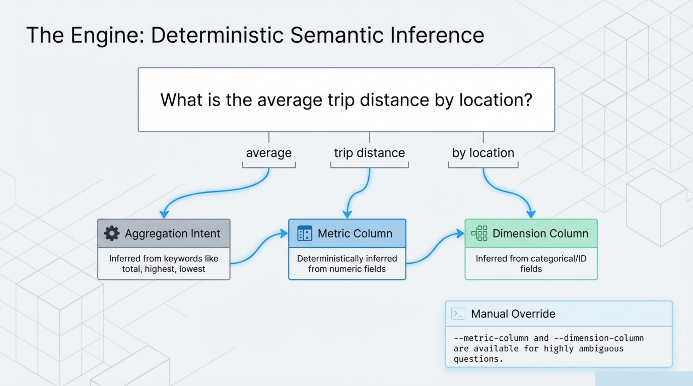
The Engine: Deterministic Semantic Inference05 / 13
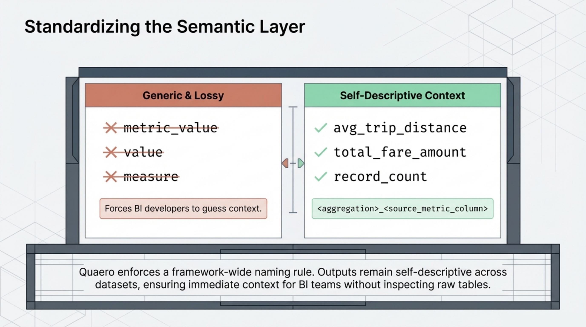
Standardizing the Semantic Layer06 / 13
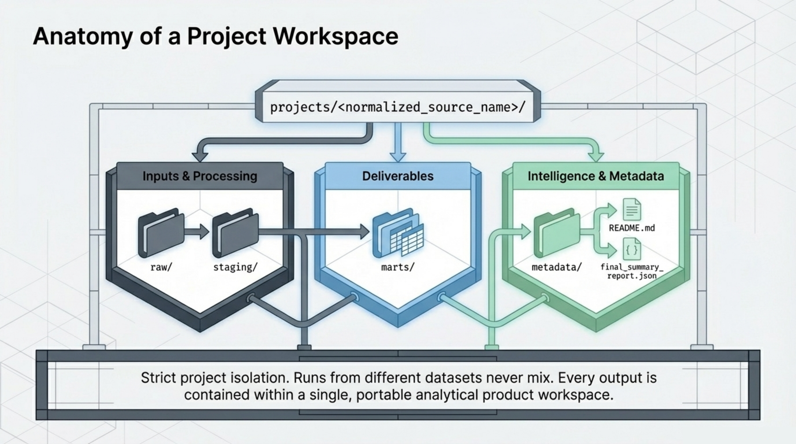
Anatomy of a Project Workspace07 / 13
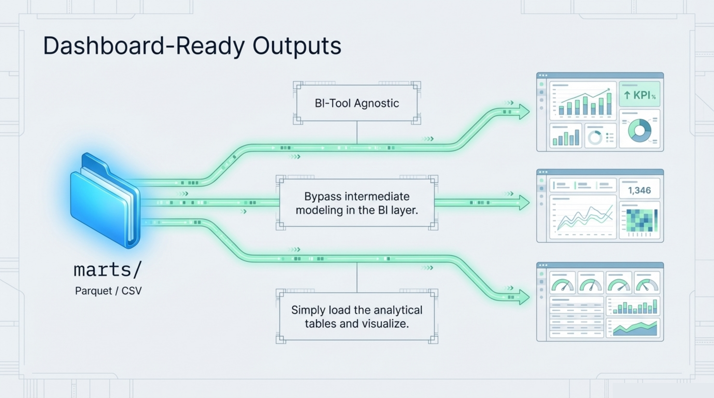
Dashboard-Ready Outputs08 / 13
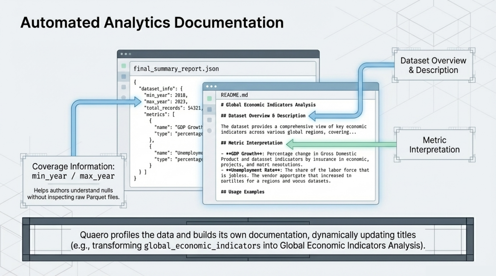
Automated Analytics Documentation09 / 13
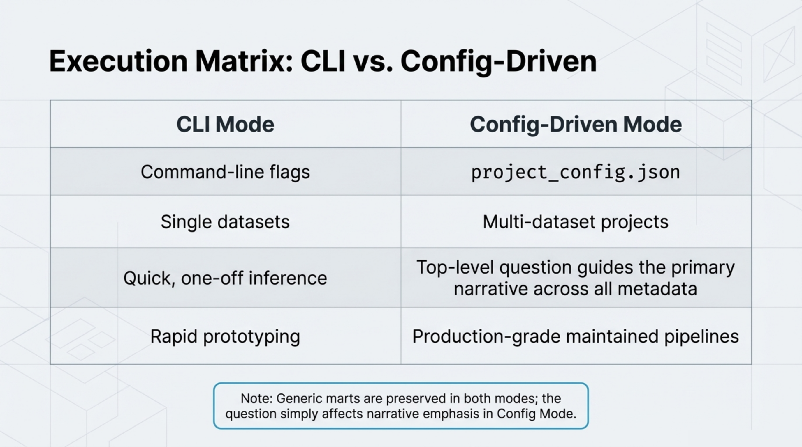
Execution Matrix: CLI vs. Config-Driven10 / 13
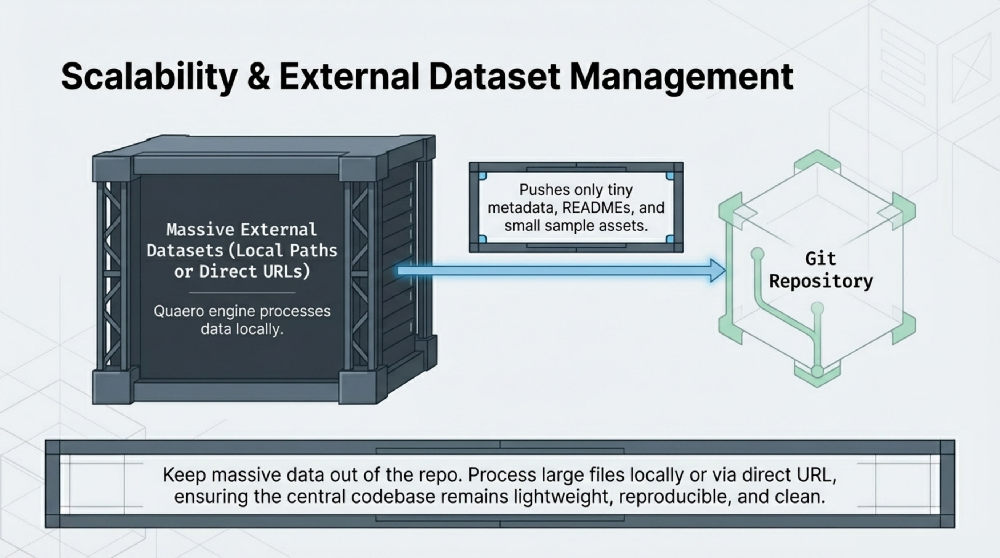
Scalability & External Dataset Management11 / 13
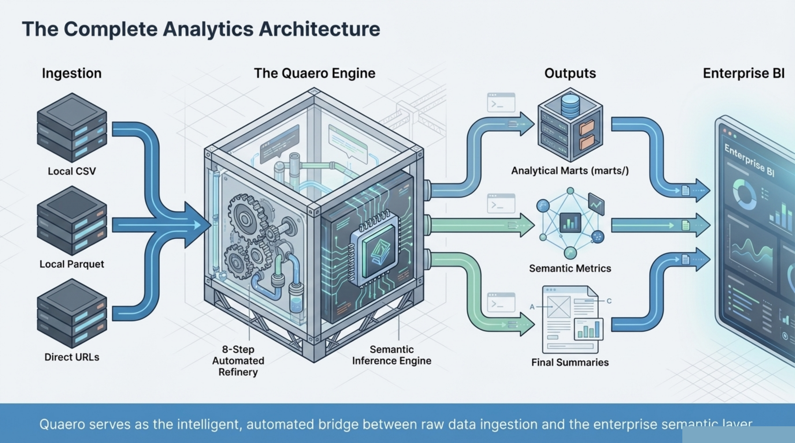
The Complete Analytics Architecture12 / 13
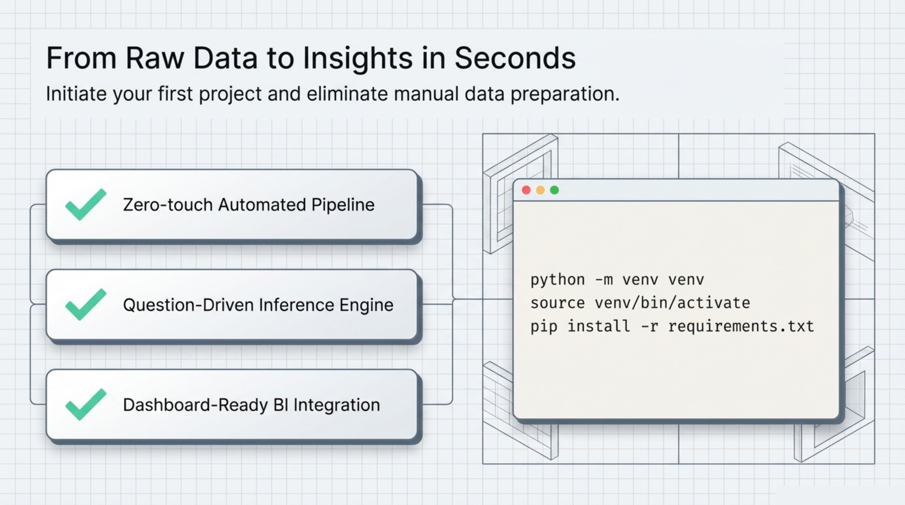
From Raw Data to Insights in Seconds13 / 13